Relazione TCP/IP
Network e comunicazione
Cosa si intende per network e cosa si intende per communication?
Con network si intende un insieme di computer collegati tra loro tramite un cavo LAN che condivide informazioni con l’aiuto di schede di rete. Invece con communication si intende il processo di inviare messaggi da un luogo ad un altro tramite una connessione con o senza cavi.
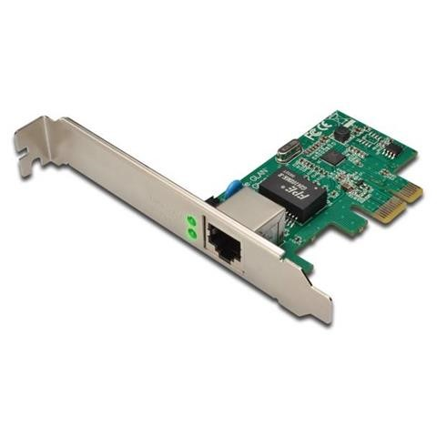TCP vs UDP
Il protocollo TCP frammenta il messaggio in piccoli pezzi chiamati segmenti che vengono passati al protocollo IP che gestisce il trasferimento dei segmenti tra i network per farli arrivare al destinatario. Una volta arrivato il TCP rimette insieme i segmenti per formare il messaggio finale. Invece il l’UDP non frammenta il pacchetto e i suoi pacchetti si chiamano UDP datagram. Infatti le due grandi differenze tra il TCP e l’UDP sono la velocità e l’affidabilità. Il TCP è più affidabile ma più lento dell’UDP che è utilizzato per le comunicazioni che richiedono un trasferimento veloce di dati. Sia il TCP che l’UDP utilizzano il protocollo IP per gestire la trasmissione del messaggio tra mittente e destinatario.
| TCP | UDP |
| Affidabile | Non affidabile |
| Segmen | Datagram |
| Connesso | Non connesso |
| Segmentato | Non segmentato |
| Controllo degli errori | Senza controllo degli errori |
| Lento | Veloce |
| Consegna ordinata | Consegna non ordinata |
Messaggio tra 2 computer
Per inviare un messaggio tra 2 computer bisogna passare dai livelli superiori a quelli inferiori prendendo il pacchetto del livello superiore, incapsularlo e mandarlo al livello inferiore. Quindi il pacchetto diventerà sempre più grande fino a quando non arriverà al livello più basso. Poi il destinatario effettuerà i passaggi al contrario per riavere il messaggio originario. Il livello più alto è l’Application che genera il messaggio e il livello più basso è il Physical che manda il pacchetto.
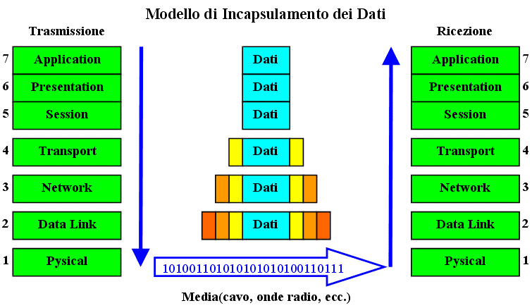Caratteristiche di ogni livello
Physical
Nel livello physical il messaggio viene davvero spedito sul canale. Infatti si occupa di trasformare gli zeri e uni in segnali. Questi segnali possono essere tensioni, onde radio o segnali di luce.
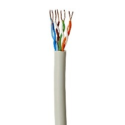 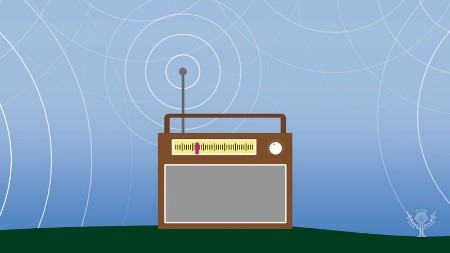 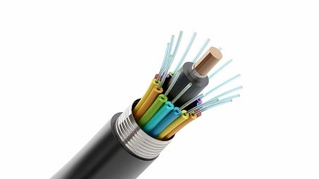Data Link
Nel livello Data Link le PDU sono chiamate Ethernet frame. Il livello si suddivide in 2 livelli:
- Sotto-livello MAC
- Sotto-livello LLC
Sotto-livello MAC
Il sotto-livello MAC si occupa di:
- Incapsulare il messaggio
- Accedere al canale di trasmissione
Quando incapsula il messaggio il livello MAC aggiunge un header e un trailer al pacchetto IP che riceve dal livello network. Nell’header sono presenti l’indirizzo MAC e del mittente e del destinatario. Invece il trailer contiene 4 byte per il controllo degli errori.
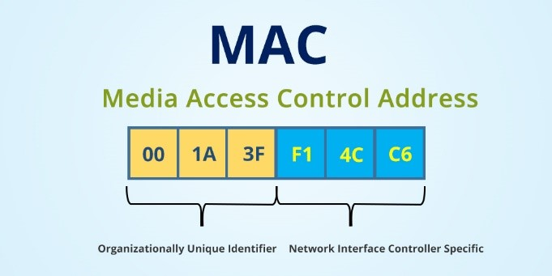Sotto-livello LLC
Il sotto-livello LLC offre:
- flow control
- error control
Con flow control si intente la tecnica con la quale il mittente e il destinatario si mettono d’accordo per evitare di mandare in sovraccarico uno dei due end-point o di perdere dei pacchetti per dei limiti di memoria. Invece con error control di intende l’utilizzo dei byte nel trailer del pacchetto per controllare se il pacchetto ha subito delle trasformazioni non volute durante la trasmissione e il controllo della corretta ricezione del pacchetto.
Infatti per capire se il pacchetto è arrivato al destinatario correttamente il ricevitore manda un pacchetto di conferma chiamato ACK. Se l’ACK non viene ricevuto dal mittente esso rispedisce il pacchetto ad esso associato al destinatario.
Il livello LLC può inoltre cambiare la dimensione dei pacchetti che riceve per fare in modo da farli stare nel livello Data Link.
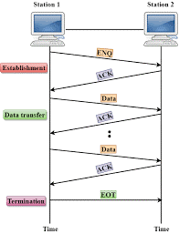Network
Le funzioni del livello network sono:
- Logical Addressing
- Routing
- Path determination
Logical Addressing
Ogni computer in un network ha un indirizzo IP unico. Il livello network inserisce nel pacchetto l’IP del PC mittente e destinatario per formare un pacchetto IP.
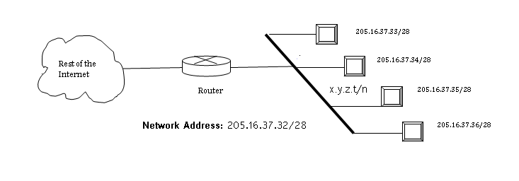Routing
Se i due computer sono nella stessa rete il routing non è necessario. Infatti il routing è un processo in cui i pacchetti IP vengono mandati da una rete ad un’altra.
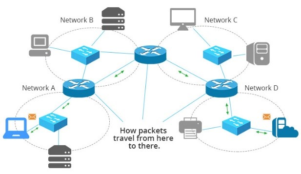Path determination
La scelta del miglior percorso possibile per la consegna dei dati dall'origine alla destinazione si chiama Path determination. I dispositivi di livello 3 utilizzano protocolli come OSPF (Open Shortest Path First), BGP (Border Gateway Protocol), IS-IS (Intermediate System to Intermediate System) per determinare il miglior percorso possibile per la consegna dei dati.
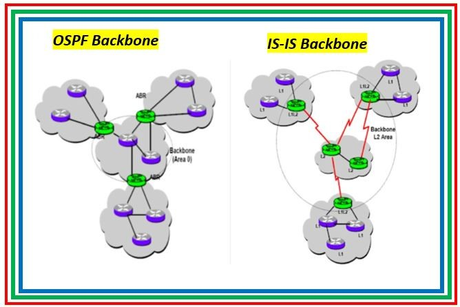Transport
Quando il messaggio raggiunge il livello transport, si scegli di usare o il TCP o l’UDP. Il TCP supporta la segmentazione. Quindi, se il messaggio è grande, il protocollo TCP lo divide in parti più piccole e aggiunge un header per formare un TCP segment. Invece, UDP non supporta la segmentazione, quindi le applicazioni che utilizzano UDP dovrebbero inviare messaggi sufficientemente brevi da rientrare in un UDP datagram. Gli UDP datagram sono considerati inaffidabili perché non vi è alcuna garanzia che tutti i datagram inviati vengano ricevuti dal destinatario e nell'ordine corretto, e perché non effettua il controllo e la correzione degli errori. Il TCP, invece, è più affidabile e garantisce la consegna nell’ordine corretto dei dati dal mittente al destinatario. La trasmissione dei dati via TCP prevede tre fasi:
- Stabilimento della connessione
- Trasferimento dati
- Terminazione della connessione
Fase di creazione della connessione
Nella fase di creazione della connessione, il TCP o il client del mittente invia un pacchetto al TCP o al server del destinatario richiedendo una connessione in cui il client e il server si riconoscono. Dato che viene creata una connessione si parla di protocollo orientato alla connessione e il processo di creazione della connessione è chiamato Handshake.
Trasferimento dati
Una volta stabilita la connessione, la fase successiva è il trasferimento dei dati. Durante il trasferimento dei dati, TCP offre alcune funzionalità chiave che UDP non fornisce e include:
- Trasferimento dati senza errori
- Trasferimento dati ordinato
- Ritrasmissione dei dati persi
- Eliminazione di pacchetti duplicati e
- Limitazione della congestione
- Cerchiamo di discutere ogni caratteristica uno per uno.
Trasferimento dati senza errori Per il controllo degli errori si usa il Checksum. Se il Checksum del mittente è diverso da quello del destinatario non viene mandato l’ACK.
Trasferimento dati ordinato TCP aggiunge un codice sequenziale nei segmenti TCP. Il destinatario utilizza i numeri di sequenza per ricostruire il messaggio dell'applicazione nell'ordine corretto.
Ritrasmissione di segmenti persi Per ogni TCP segment viene mandato un ACK. Se non viene ricevuto l’ACK viene rimandato il segment associato all’ACK non ricevuto.
Scartare i segmenti duplicati Se il destinatario riceve 2 pacchetti con lo stesso codice sequenziale ne viene cancellato uno per evitare di avere delle copie.
Congestione Limitazione o controllo del flusso Il protocollo TCP invia le PDU sempre più velocemente fino a quando non si accorge che le ACK arrivano fuori tempo. Quando si accorge che ci sono dei ritardi da parte del ricevente diminuisce la velocità della trasmissione.
Chiusura della connessione.
Quando un endpoint desidera interrompere la connessione, invia un messaggio di chiusura all'altro endpoint. L'altra estremità riconosce il messaggio. Entrambe le estremità eseguono questo processo di handshake.
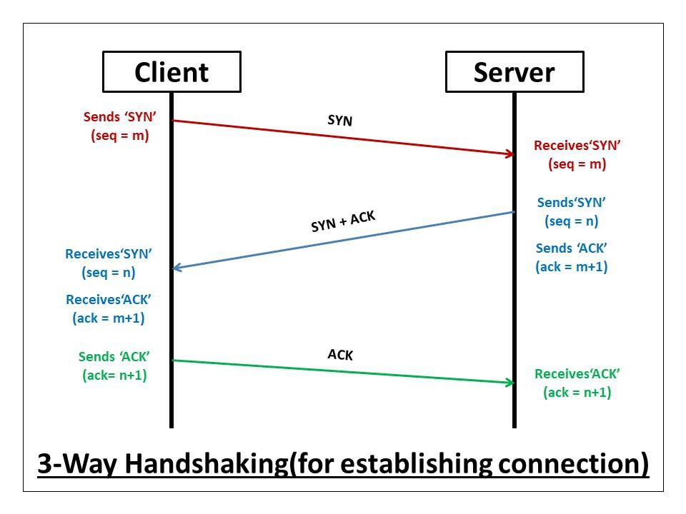Application
Il livello Application viene utilizzato dalle applicazioni che mandano messaggi da un computer all'altro in una rete. Ad esempio, Internet Explorer, Google Chrome, Firefox, Microsoft Outlook, etc. Quindi, il livello dell'applicazione fornisce i mezzi per accedere alle informazioni sulla rete.
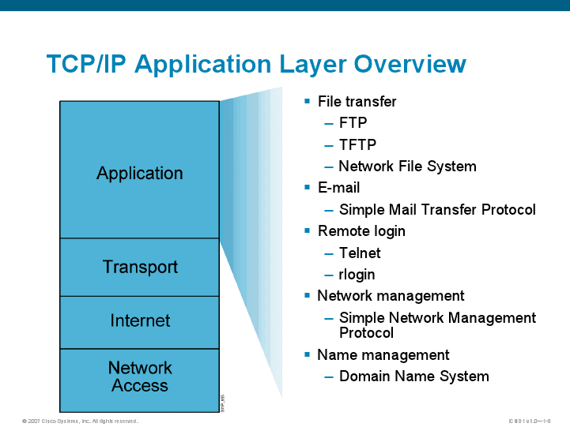